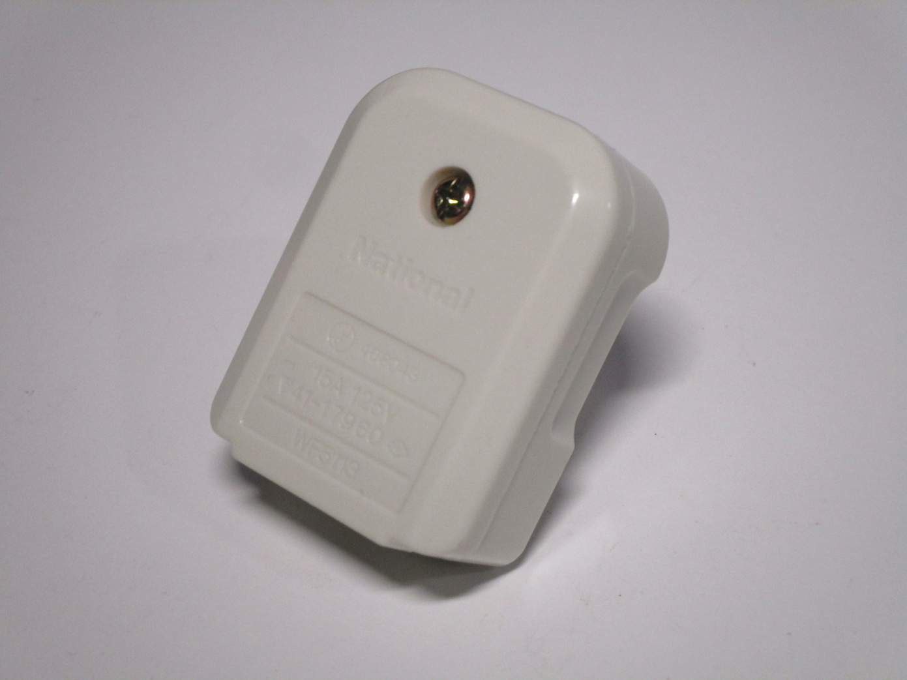
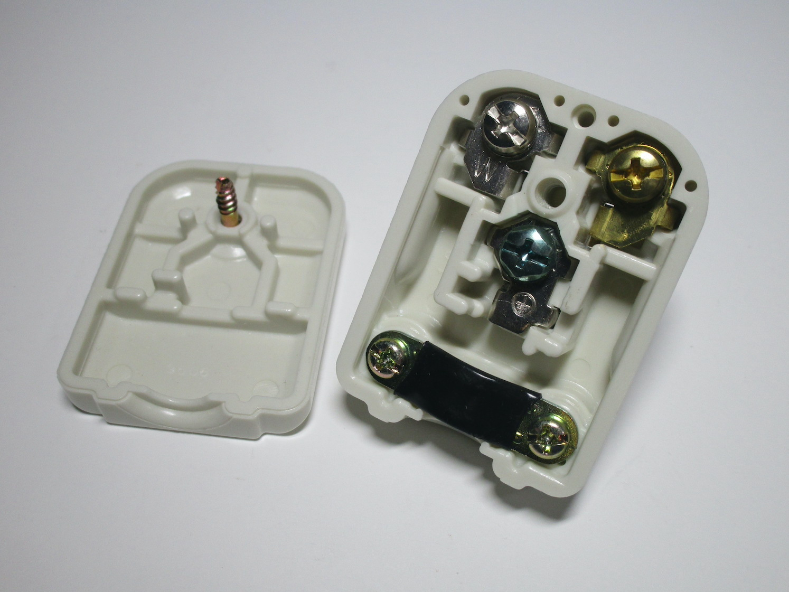

Other devices and unusual items
This page contains the items in my collection that don't really fit anywhere else.
German radio antenna connector
This socket from Germany is meant to be connected to an antenna and used with a radio, as written on the device itself.
The connector is polarised (with the positive and negative holes labelled up on the front cover); two screws on the front remove the faceplate which then also reveals the connections and screw holes for mounting to a wallbox.


Earthed Japanese plug
Rating: 15A 125V
This is an earthed (3-prong) plug from Japan, branded as National and made by Matsushita Electric Works Ltd., in Japan. It's the same type of plug as the NEMA 5-15P plug used in North America, though plugs like these aren't always used in Japan to connect earthed devices; sometimes, 2-prong plugs with a separate earth lead are used, with some more modern sockets being able to use either type.
One notable feature of this plug is the gold-coloured live pin, presumably to avoid people from miswiring it. The neutral and earth pins are both coloured silver, though the screw for the earth connection is coloured green.
 {kind=link}
{kind=link}
{kind=link}
Metal-cased isolator switch
This unusual isolator switch was likely used for disconnecting heavier appliances, as indicated by the label inside talking about heaters and motors. Three contacts per side are present, possibly indicating that it could have been used with three-phase loads.
The switch is housed inside a heavy-duty metal casing (with no provision for an earth connection); most notably, the casing is perfectly suitable for use with American lightswitches, with the mounting holes and front cutout lining up perfectly.


DIN rail lightswitch
The flexibility of the DIN rail means that it can be used for many things other than just breakers - this, for example, is a lightswitch meant to fit on one. This can be useful for controlling lights in a more industrial or specialised usecase, such as a bank of lights with a main breaker next to them.
The lightswitch inside is simply a module, made by Vimar - it's possible to have things other than a lightswitch installed, such as a power socket, depending on the usecase. This way the flexibility of modular electrical devices can be combined with the one present in the DIN rail system.


125V power meter
Rating: 5-15A 125V 50Hz
This old analogue power meter, built by Officine Galileo in Italy, is fairly standard for a meter of the time. However, what makes it interesting is that it's meant for 125V supplies; these were quite common back in the day for lighting (as explained before), as lighting circuits were on a different tariff and the voltage difference was used to prevent people from using these supplies for appliances.
This also explains the quite low amp rating of the meter - definitely not enough for an entire house, but totally fine for a lighting circuit and small appliances like radios or desk fans. It should be noted that back in the day there were a bunch of voltages in use, such as 150V, however beginning from the 50s these were slowly standardised; 125V was one of the "official" voltages for lighting supplies.


AEG mains-powered hour meter
This is a fairly simple hour meter - once powered up, by mains voltage, it counts the hours that it's been powered up for. This is useful for machinery or equipment that may need something to happen after a certain point, like servicing or replacement of components.